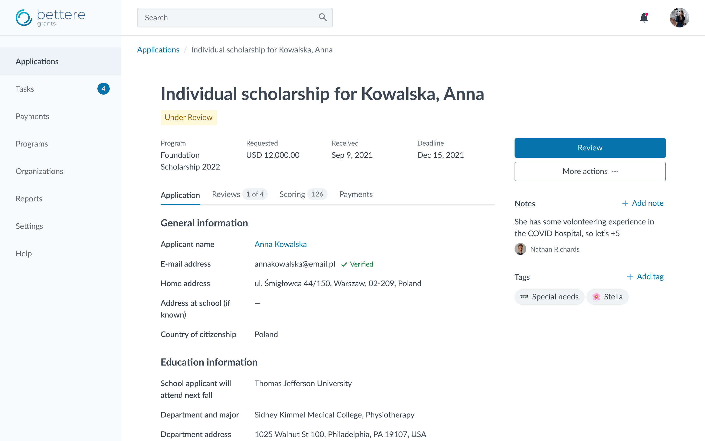

White-labeling for a SaaS platform
Role
Lead UX/UI designer
Design team
+ 1 junior designer
Timeframe
2018–2022
Context
Cold autumn of 2018. I had just started working on a big enterprise platform for Grants Management in the Corporate social responsibility domain that had been on the market for a decade.
The system consists of several parts and connects a number of user roles. One of those roles is an applicant, an individual or an organization representative who is requesting some help for themselves or their organization like donations, scholarships, goods, etc. Applicants work on a dedicated website, let’s call it an applicant portal, unique for each client.
I wish our applicants thought that they’re still on our website— a client representative
A client pays — the team implements. Aiming to do their best for clients, the team used to start each new theme from a blank artboard. Unsurprisingly, the design concept itself took at least 4 hours to prepare, not to mention communication with a client and further iterations. That all ended up in the following average:
Implementation
16h
Design
6h
Client communication
From 2h to ∞
That took us 20h for a theme for a single client in total. Moreover, one would never get their theme earlier than 2 weeks after the development starts since the task goes through a standard 2-week Scrum sprint. Sounds ridiculous for changing a logo and a couple of CSS rules, doesn’t it?
I couldn’t keep up with that and decided to take at least baby steps to make the process easier and the system scalable.
Process & findings
Desk research
I explored best practices for white-labeling and existing solutions, but the final scope of the allowed changes was inspired by our clients. The design team manually analyzed all the themes ever created and a dozen of recent requirements. What for? We have a bunch of stakeholders, and each of them wanted to contribute to the scope, I’ll cite a couple:
All our clients crave for a custom font, they won’t ever sign without it
Our product is extremely unique, you won’t manage to unify the themes. Half of our clients request a custom layout, we won’t survive without this opportunity
The desk research revealed the following insights:
- The most popular things our clients ask us to change are their logo, links & buttons style, and background.
- Clients were asked to provide their font by Client Success Managers (CSMs). No more than 1 of 20 clients aked about changing the font themselves.
- There’s an only client with a custom layout; others never ask for it unless CSM has shown them that one as an example.
- The intent to choose accessible platforms over inaccessible ones is constantly growing.
Go to the field
For 2 months the design team was handling client requirements along with the Client Success Team (CST), from gathering requirements to a theme presentation. This first-hand experience let me understand the tasks and struggles CST came up with during the client onboarding process.
Some insights
- As far as this work is custom development, CST and Sales gradually got a card blanchè to promise a client anything they would ever ask. There’s no surprise, as these teams benefit from each closed deal and ticket and are pretty far from the product development roadmap.
- CST and Sales lacked a single source of truth. People made their own templates and questionnaires, nobody knew what was allowed or possible within a theme.
- High customization resulted in poor accessibility and maintenance. We used to have unique CSS stylesheets for each client, which made any system-wide UI updates almost impossible or cost a fortune.
- This’s not a good idea to customize your font. Firstly, clients didn’t care much about their font license. Secondly, optical size and baseline may differ quite dramatically and consequently ruin your grouping and hierarchy. Finally, changing OpenSans to Helvetica (one sans serif to another sans serif) doesn’t make any dramatic difference.
Design solution
After a thorough analysis, possible white-labeled parameters were divided into 3 groups based on their impact and dev effort:
Configure
- Logo
- Accent color
- Link color
Nice to have
- Page background
- Favicon
- Corner radius
Avoid customizing
- Font
- Layout
- Basic color palette
In addition, a client may change not only a theme for their portal but configure content as well. See how it works for the login page:
Note that the concept themes are fictional, as far as I’m not allowed to reveal the real clients. All the names, logos, and photos belong to their owners. All texts are fictional.
To show a theme to a client, a designer creates mockups in Figma for 3 most popular pages an applicant visits most often:
I also created a concept for a theme configurator to eliminate the development and QA effort in the client onboarding process.
An essential part of the configurator is a built-in accessibility color checker. As far as majority of our clients aren’t much into web development, we have to guide them to create an appropriate experience for their applicants.
Continuous improvements
Throughout 4 years the white-labeling process came through the following stages:
- Each theme started from scratch.
- Basic template in Figma and its implementation in code.
- A guide for the Client Success team and a survey for clients.
- Accessibility refinement. My team analyzed the basic template and a dozen client themes to prepare a complete guide for developers and QAs. Also, I led 3 internal educational events on accessibility.
Teamwork & Leadership
In December 2020 I took on the role of Lead UX/UI Designer at Eurovensys and became responsible for the design team. I hired two more junior designers, one of them for this product. With ready-to-use Figma templates and clear guidelines for Client Success Managers, onboarding was quick, and the new designer started delivering client themes quickly.
I want to note Aleksandra’s professionalism and perfect knowledge of the project on which we worked. I have always received constructive feedback on my work which was crucial for my professional growth.— Vera Yuzefovich, UX/UI designer at Eurovensys
The process I set up ensured scalability and consistent high quality of themes, no matter who was working on them. This also reduced my own workload and gave me space to define strategy and lead a design team for another product — Remedly, a cloud-based EHR/EMR platform for healthcare.
Client themes turned out to be a great entry task for a junior: it gave them confidence, independence, and a clear sense of how a systematic design approach pays off. Over the next two years we shipped dozens of themes, and I was there to support the team in tricky situations and make sure our work stayed aligned with the bigger product vision.
Impact
- The average effort has decreased from 24h to about 12h per theme.
- In 2018 we needed 3 iterations on average to confirm a theme with a client. By the end of 2022, this rate had dropped to 1.8.
- The % of theming-related tasks in the backlog has dropped (based on story points).
Afterword
In this project, I was able to leverage my skills in UX/UI design, team leadership, and client communication. However, this project is only one of many I led while working on this product. Some others:
- I built design guidelines, UI-kit and page templates from scratch, based on the existing design.
- After the product was acquired, I led implementation of the owner's design system, Skyline by Benevity.
- I conducted the 1st internal accessibility audit for the platform back in 2020 and ensured that any new implementation met WCAG 2.0 AA requirements. When the product was audited by LevelAccess in July 2022, we received positive feedback on our efforts.